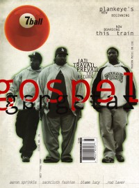

CMnexus
: Contemporary Christian culture, music, and media.
|
|
7ball, Sep / Oct 1999, #26
| Cover |
|---|
|  | | Writers in this Issue |
|---|
Alexander, Melody
Bartenhagen, Marcia
Brooks, Thompson
Dixon, Amy E
Farris, Christina
Keyes, J. Edward
Martin, Rachel L
Newcomb, Brian Quincy
Olson, Steve
P.R.E.Z.
Simon, Matt
Sondova, Amy
Sprout, Jay
Strang, Cameron
|
Cover Feature:
- "They're Back" by Thompson Brooks, additional reporting by P.R.E.Z.
Article:
- "When It Rains It Pours" by Amy E Dixon
- "Walking The Plank" by Marcia Bartenhagen
- "Has No Bandwagon" by Brian Quincy Newcomb
Bankshots:Spotlight:Album Review:blah, blah, blah: "Then There Was The Time..." by Cameron Strang
This issue of 7ball came bundled with GAS #15. |
|